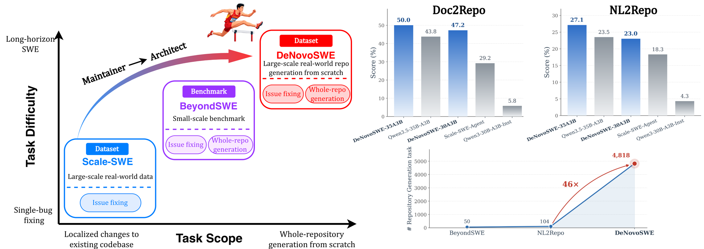
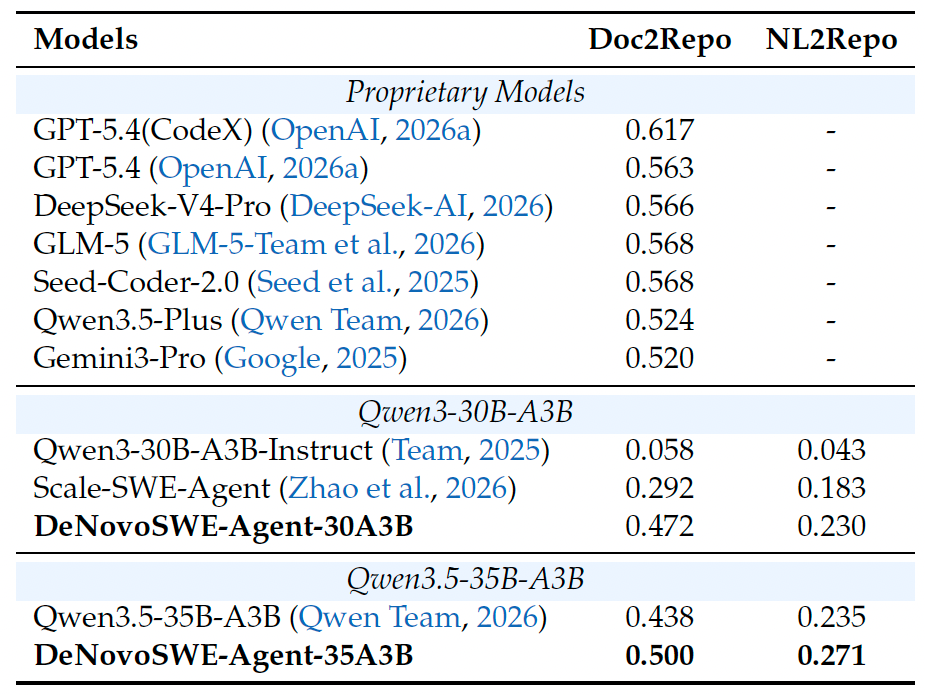

00全景与读法
过去三年，代码 agent 的能力评测几乎被 SWE-bench 范式定义：给定一个有 bug 的真实仓库、一条 issue 描述，模型产出一个局部 patch，跑 F2P 测试通过即算解决。这个范式干净、可验证、贴近真实工程，但它本质上只考察"在一个既有结构里修改几行代码"。DeNovoSWE 面向的是真正没被解决的那一类：从一份高层文档规格，从零架构并实现整个仓库（doc2repo）。它不只是一个 benchmark，而是一套训练数据 + 环境，从设计上就明确 for SFT & RL。
每一节固定三段：朴素基线（左栏，灰：不看论文时的直觉实现）/ DeNovoSWE 的做法（右栏，橙）/ 差在哪（下方色块：差异、原文是否给了理由、对 RL-on-NPU 的含义）。数字按来源标注：自报 论文或仓库口径、第三方 独立来源、推断 本站分析。原文全部评测分数为 provisional；Doc2Repo 设定仅 50 个实例，样本偏小，需独立复现后再下定论。
贯穿全文的一条线索：doc2repo 最反直觉的难点不在训练，而在反向构造数据。真实仓库几乎从不附带能唯一确定自身的规格文档，流水线要做的是以可运行的真实仓库为 ground truth，逆向合成那份本不存在的文档；而单元测试 + Docker 使这一合成可以被客观验证，也使产出物直接成为 RLVR 环境。
01范式转移：从修 bug 到建仓库
SWE-bench Verified 的实例平均只触及 1.3 个文件、改动 11.6 行。模型不需要做架构决策，不需要决定模块如何拆分、接口如何定义、依赖如何组织，它要做的是在既定结构上做局部补全。这一方向已接近解决：GPT-5.2、Gemini3Pro、DeepSeek-V3.2 在 SWE-bench Verified 上都已 >80%（provisional），逼近饱和，继续争夺零点几个百分点的边际信息量已经很低。DeNovoSWE 给出的对照数字直接揭示了 gap：这些在 Verified 上 >80% 的前沿模型，在 BeyondSWE 整体上全部 <45%；即便是相对"最像传统建仓库"的 Doc2Repo 设定，前沿的 DeepSeek-V3.2 也只有 54.99%（均 provisional）。

这张图怎么读
左图的两条轴是本节论点的坐标系：Scale-SWE 在左下（局部修改、单 bug），DeNovoSWE 在右上（整仓生成、长程）；BeyondSWE 在中间，既含 issue fixing 也含 whole-repo generation，但标注为 "Small-scale benchmark"。"Maintainer → Architect" 的箭头就是原文所说"从修 bug 到建仓库"的角色转换。
右上两张柱状图值得对照的是两组基座与训练后的差距：30B 组从 Qwen3-30B-A3B-Inst 5.8 到 DeNovoSWE-30A3B 47.2（原文的 +41.4 分）；35B 组从 Qwen3.5-35B-A3B 43.8 到 DeNovoSWE-35A3B 50.0——图中显示 35B 基座本身已到 43.8，增量为 6.2 分（推断，按图中数字计算，原文未给 35B 基座分数）。中间的 Scale-SWE-Agent 29.2 说明 D14 的修 bug 数据对 doc2repo 有部分迁移但远不够。右下的 46× 对应原文"比现有仓库生成基准大一个数量级以上"：4,818 对 NL2Repo 104、BeyondSWE 50。

这张图怎么读
两条链的第一个节点差别最大：左边输入里有一个现成仓库，右边输入只有文档。这意味着右边链条的中间节点"从零架构并实现"没有任何既定结构可依赖——第 02 节的三层难度全部源于此。
虚线旁注的 500 轮 / 256k 不是名义上限，原文明确它是这类任务的常态尺度；第 09 节对昇腾的全部讨论都以这两个数字为起点。
朴素基线
SWE-bench Verified 分数 >80% 意味着代码 agent 已接近能独立完成软件工程；继续在 Verified 上刷分即可衡量进步。
DeNovoSWE 的做法
自报（prov.）同一批 Verified >80% 的前沿模型在 BeyondSWE 整体 <45%，Doc2Repo 上 DeepSeek-V3.2 仅 54.99%。原文的结论：一个模型修 bug 能到 80+，却无法生成能通过测试的完整仓库——"修 bug"和"建仓库"考察的是两种不同的能力。DeNovoSWE 把任务范围整体转移到后者。
差在哪差别在把"能力上限"从分数饱和度改为任务结构。原文给出了对照数字作为理由，但两组数字来自不同基准（Verified 对 BeyondSWE），且 BeyondSWE 由同团队构建、Doc2Repo 仅 50 实例——gap 的存在有证据，gap 的幅度需第三方复测。与 D14 的关系：ScaleSWE 走"修 bug"方向的大规模数据（6M PR → 10 万实例 + 71k 轨迹 SFT → 64% Verified），DeNovoSWE 是同团队在长程方向的升级。
02gap 的三层结构性难度
doc2repo 的难度并非线性叠加，而是结构性更高一档，原文拆为三层。架构决策：没有现成结构，模块如何划分、目录如何组织、抽象边界如何设定全由 agent 自行决定，且早期错误会持续传导。跨文件一致性：几百行代码散落多文件，函数签名、数据结构、import 关系必须全局自洽，局部正确不等于整体能跑。超长交互：从空目录到可通过测试的完整仓库，需几百轮工具调用、上下文逼近几十万 token，模型必须在超长 horizon 上保持目标不漂移、不中途放弃、不 reward hacking。
朴素基线
建仓库 = 多个修 bug 任务的串联；把仓库拆成文件逐个生成即可，难度随文件数线性增长。
DeNovoSWE 的做法 / 原文的分析
推断（原文分析）三层难度中的前两层（架构决策、跨文件一致性）是修 bug 任务里不存在的能力维度，第三层（超长交互）是既有难点的极端放大。5.6 文件 / 209.9 行对 1.3 文件 / 11.6 行的 18× 是复杂度的量化，但结构性差异不在倍数上。
差在哪差别在早期错误会持续传导：修 bug 的错误是局部的，架构决策的错误会污染后续几百轮。这对 RL 的含义直接：轨迹级奖励在 500 轮上的信用分配比 30–50 轮的 SWE 任务更困难（D12 第 08 节的 turn-level 方法在此尺度是否有效，原文未讨论）。
03逆向合成规格：为什么难在数据而不在训练
任务形式是"文档规格 → 仓库"，要让它可训练、可评测，需要的不只是一份文档，而是一份既完整、又能唯一确定一个目标仓库的文档规格：不能有缺漏（否则 agent 不知道要实现什么）、不能有歧义（否则正确实现不唯一、无法判分）、还须可实现（不能写出无法实现的需求）。然而真实世界的仓库几乎从不附带这种规格——README 和注释是面向人的、残缺的、依赖上下文补全的，远达不到"提供给模型即可从零重建整个仓库"的精度。所以流水线要做的是：以一个已有的、可运行的真实仓库作为 ground truth，逆向合成出那份本不存在的、精确完备的文档。
朴素基线
直接用仓库自带的 README 或 docstring 当规格，让 agent 从零重建；或者由人工为少量仓库撰写规格（NL2RepoBench 104、BeyondSWE-Doc2Repo 50 的量级）。
DeNovoSWE 的做法
自报 规格由自动化沙箱流水线从真实仓库逆向合成，三条要求：无缺漏、无歧义、可实现。合成质量最终以"按它实现、运行单测是否通过"客观验证（第 05 节），而非以文本质量评判。
差在哪差别在规格是被合成并验证的，不是被采集的。原文给出了 README 不可用的理由（面向人、残缺、依赖上下文），但未给合成规格的长度、格式或示例，也未给"唯一确定"的判定标准是否等同于"单测全过"——后者是可执行的近似，两者不严格等价（推断）。
04分而治之 + 迭代 critic-repair
流水线的核心是两个机制。分而治之（divide-and-conquer）：一个完整仓库整体合成文档复杂度过高、模型难以一次处理、产出质量差，流水线把大仓库拆成可管理的模块 / 部件分别合成局部规格再组合，等于把一次"超高复杂度的整体规格生成"降维成若干次中等复杂度的局部生成，每一步都落在模型能稳定产出高质量结果的区间内。迭代 critic-repair：单次草稿必然存在缺漏，流水线引入批评者（critic）闭环——生成草稿 → critic 找缺漏 / 歧义 / 不可实现处 → 针对性修复 → 再批评，循环直到文档完整到"足够可执行"（足够支撑一次从零重建），把"文档质量"从一次性的不确定产出变成可收敛的迭代优化。

这张图怎么读
critic-repair 子图内的回边（修复文档 → 生成文档草稿，标注"循环直至完整"）是流水线的核心：它把文档质量变成可收敛的迭代量。但注意回边的终止条件"完整"在图内没有外部校验——校验在子图之外的"沙箱配置"节点，即第 05 节所说 critic-repair 不是缺乏外部校验的自循环。
"分而治之"只出现在进入子图之前的一条边上：拆分是一次性的，critic-repair 是对每个模块分别迭代还是对组合后的整体迭代，图与原文都未明确（推断：按"分别合成局部规格再组合"的描述，应为先局部后组合）。
朴素基线
用一个强模型读整个仓库、一次生成完整规格文档；质量不够就换更强的模型或加长上下文。
DeNovoSWE 的做法
自报 拆模块降维 + critic 闭环迭代。原文给出的理由：整体合成复杂度过高、模型难以一次处理、产出质量差；单次草稿必然存在缺漏。
差在哪差别在把规格生成从一次性输出变成有终止条件的迭代过程。原文未给 critic 与生成器是否为同一模型、平均迭代轮数、拆分粒度的确定方式——这三项是复现流水线必须自定的参数。这套机制与 D12 记录的生产 agent "验证外置"原则同构：critic 是独立于生成器的评估角色（推断）。
05可验证三件套与 4818 的规模
最终每个实例打包成一套可验证三件套：文档 + 单元测试 + Docker——文档是输入，单元测试是判定"重建出来的仓库对不对"的 ground truth，Docker 保证执行环境可复现。正因为有这套测试 + 环境作为保障，critic-repair 才不是缺乏外部校验的自循环：文档是否真的能唯一确定那个仓库，最终可以用"按它实现、运行单测是否通过"客观验证。规模上 DeNovoSWE 构建出 4818 个实例，比现有仓库生成基准大一个数量级以上（对照：NL2RepoBench 仅 104、BeyondSWE-Doc2Repo 仅 50）——对一个从零造整库的长程任务，这个量级才够支撑 SFT 乃至后续 RL。
朴素基线
以 LLM 评审比较生成仓库与参考仓库的相似度作为判分；实例规模在百级（NL2RepoBench 104、BeyondSWE-Doc2Repo 50）。
DeNovoSWE 的做法
自报 判分为 Docker 内跑单元测试的执行结果，与 SWE-bench 范式同一语义；4818 实例，为 NL2RepoBench 的 46×（图 1 右下）。
差在哪差别在执行判分 + 千级规模，两者共同使 RL 成为可能：执行判分给出客观 0/1 奖励，千级规模给出足够的任务池。原文未给 4818 实例的仓库来源分布、语言分布、平均文件数 / 行数（仅给 BeyondSWE 的 5.6 文件 / 209.9 行），也未给单测覆盖率——后者决定"单测全过"与"仓库正确"的等价程度。
06难度感知轨迹过滤：34k → 11k
有了实例和环境，下一步是采集"如何从空目录构建出仓库"的解题轨迹用于 SFT。DeNovoSWE 用 DeepSeek-V4-High 采集了 34k 条轨迹、过滤后只保留 11k——约 1/3 的留存率。关键认知是：长程任务的轨迹，越多不等于越好，甚至可能越多越差。doc2repo 的轨迹动辄几百轮、几十万 token，噪声来源远比短任务多：中途放弃 / 走偏（agent 在几百轮里很容易偏离目标、绕远路、堆积无效操作，即使最终结果正确、过程也在传递不良模式）、reward hacking（长 horizon 提供了投机取巧的空间，这类轨迹"看起来解了"但学到的是规避行为）、质量参差（temperature=1 下不同 rollout 的整洁度差别巨大）。全部纳入 SFT 会直接污染监督信号，把模型引向放弃、绕路与投机行为。
所以过滤是难度感知（difficulty-aware）的，同时压两个维度：质量（留下真正解对、轨迹干净、没有明显放弃 / hacking / 冗余绕路的样本）与多样性（不能因为追求"干净"就只保留简单实例——否则模型只学会简单任务、高难度实例得不到覆盖，难度感知正是为在过滤时刻意保留足够比例的高难度样本）。采集用的 agent 是 AweAgent，配置 max turns 500、max seq 256k、temperature 1。
这张图怎么读
与 D14 图 5（ScaleSWE 的 125k 候选 → 71,498 条）并排看：ScaleSWE 留存约 57%，DeNovoSWE 留存约 32%（推断，按原文数字计算）。留存率相差近一倍，对应原文的判断：长程轨迹里可用的是少数、多数是噪声。
"难度感知"标注在过滤边上而非节点上，提示它是过滤的准则而非独立步骤：同一次过滤同时施加质量与多样性两个约束。原文未给两个约束的具体判据（例如如何判定"放弃"或"hacking"，如何度量实例难度）。
朴素基线
与 ScaleSWE 相同的结果级拒绝采样：保留通过全部测试的轨迹，采样越多留得越多；不区分实例难度。
DeNovoSWE 的做法
自报 34k → 11k，削减约 2/3；过滤同时压质量（解对、干净、无放弃 / hacking / 绕路）与多样性（刻意保留高难度样本）。与 ScaleSWE 的对照：修 bug 方向蒸馏 71k 条（任务短、轨迹相对规整，蒸馏量可以更大）；doc2repo 单条噪声风险高一个数量级，策略从"扩大蒸馏量"转向"严格筛选 + 难度平衡"。
差在哪差别在"通过测试"不再是充分条件：长程轨迹可以结果正确而过程有害。原文给出了理由（三类噪声来源）但未给判据与阈值；这不是简单缩量，而是长程场景下数据策展逻辑的必然变化。对 RL 的含义：同样的三类噪声（放弃、hacking、绕路）在 RL rollout 中会以更高频率出现，SFT 阶段的过滤准则是 RL 阶段奖励设计的前置研究（推断）。
07BeyondSWE：评测所在的基准套件
DeNovoSWE 的成绩报在 BeyondSWE-Doc2Repo 上，它是同团队 BeyondSWE 基准套件里的一个设定。BeyondSWE 共 500 实例 / 246 仓库，刻意把评测从"单仓库局部修复"扩到"全局解析 + 知识范围"两个维度，整体比 SWE-bench Verified 复杂约 18×（每实例 5.6 文件 / 209.9 行 vs 1.3 文件 / 11.6 行）。四个设定各考一种"超出 SWE-bench"的能力：CrossRepo（200 / 67，修需查外部仓库 / StackOverflow / 上游库的 issue，考跨仓库取知识）、DomainFix（72 / 12，量子物理 / 生物信息这类专业领域的 bug，考领域知识）、DepMigrate（178 / 120，因依赖破坏性升级的全库迁移，考全局一致性）、Doc2Repo（50 / 50，从自然语言规格构建整个可运行仓库，考从零架构）。评测一律在 Docker 里跑单元测试，并带反作弊：用 regex 黑名单阻止 agent 访问目标仓库、并把目标 commit 之后的提交从环境中清除，防止答案泄漏。Harness 是 SearchSWE（SearchTool 网页搜索 + BrowserTool 取网页内容），跑在 AweAgent 上。

这张图怎么读
四个设定的实例数极不均匀：Doc2Repo 只有 50 / 50，是最小的一个设定，却是 DeNovoSWE 报分数的地方——这是原文反复强调"样本偏小、需独立复现"的结构原因。四条边汇入同一 harness 说明四个设定的分数在同一口径下可比，但也说明 SearchSWE 的工具（网页搜索、浏览器）对 Doc2Repo 这种不需要外部知识的设定是否有影响，原文未说明。
底部的反作弊节点有两个动作：regex 黑名单（阻止访问目标仓库）与清理目标 commit 之后的提交。前者防止 agent 直接取参考实现，后者防止环境中残留答案——对 doc2repo 而言，"目标仓库"就是参考答案本身，反作弊的重要性高于修 bug 任务。
朴素基线
用一个自建的小基准报分数，不设反作弊；或者用 SWE-bench Verified 报分数，以便与前沿模型横比。
DeNovoSWE 的做法
自报 在同团队的 BeyondSWE 套件内报 Doc2Repo 设定；统一 Docker 单测 + regex 黑名单 + 清理后续提交；harness 为 SearchSWE on AweAgent。BeyondSWE 的意义在于用一套统一、抗作弊的口径证明"前沿模型在 Verified >80%、在 BeyondSWE 整体 <45%"这条 gap 真实存在。
差在哪差别在统一口径与反作弊，代价是基准与数据集出自同一团队、Doc2Repo 仅 50 实例。原文对此的处理是把所有分数标 provisional 并明确要求独立复现。与 D12 第 03 节的判断一致：分数是"模型 × scaffold × harness"的联合产物，BeyondSWE 固定了后两者，但仅在其套件内部。
08效果与定位（provisional）
以下数字均为 provisional（论文 / 厂商口径，缺统一第三方复测），Doc2Repo 设定仅 50 个实例、样本偏小，需独立复现后再下定论。
| 模型 | 设定 | BeyondSWE-Doc2Repo 通过率 |
|---|---|---|
| Qwen3-30B-A3B（基座，未训） | — | 5.8% |
| Qwen3-30B-A3B + DeNovoSWE SFT | SFT | 47.2% |
| Qwen3.5-35B-A3B + DeNovoSWE 训练 | 训练 | 50% |
| DeepSeek-V3.2（前沿闭源对照） | — | 54.99% |

这张图怎么读
看末端的虚线"逼近前沿"：它连接的是 50% 与 54.99%，差 5 分；但 Doc2Repo 只有 50 实例，5 分对应 2–3 个实例的差异（推断）。这就是原文说"统计噪声不可忽视"的具体含义。
链路上没有 RL 节点：图中两个学生模型都只经过 SFT。原文明确这些是 SFT 的结果，RL 是下一步；"for SFT & RL"的后一半在本图与本文中尚无数据。

这张图怎么读
先处理一个口径差异：原文以 DeepSeek-V3.2 的 54.99% 为前沿对照，而仓库 README 的这张表列出的闭源组是 GPT-5.4(CodeX) 0.617、DeepSeek-V4-Pro 0.566 等，两者显然不是同一版本的对照表。本页正文沿用原文数字；此表说明按 README 口径，DeNovoSWE-35A3B 的 0.500 与闭源组的差距为 2–12 分，"逼近前沿"的表述随对照对象而变。
再看 NL2Repo 列：这是图 1 右上第二张柱状图的数据来源，DeNovoSWE 训练在 NL2Repo 上的增益（30B 组 0.043 → 0.230，35B 组 0.235 → 0.271）远小于 Doc2Repo 上的增益——同一批数据对不同的整仓生成基准迁移程度不同，闭源组在该列无数据。第三行 Scale-SWE-Agent 0.292 / 0.183 是 D14 的模型在此任务上的表现：修 bug 数据带来了从 0.058 到 0.292 的迁移，但与 doc2repo 专项数据的 0.472 仍有明显差距。
朴素基线
长程能力随参数量增长，30–35B 的开源模型做不了 doc2repo；前沿闭源模型的约 55% 是任务天花板。
DeNovoSWE 的做法 / 原文的三点解读
自报（prov.）① 长程能力可以被数据蒸馏注入，而非只靠堆规模：30–35B 量级的开源 MoE 经训练后 47.2%–50%，逼近 DeepSeek-V3.2 的 54.99%，暗示瓶颈不主要在参数量而在有没有见过对的数据。② +41.4 分说明基座几乎不会 doc2repo，是数据从无到有教会的；前沿模型只有约 55% 不是因为天花板低，而是大家都缺这类训练数据。③ 数字仍 provisional，且这只是起点：以上是 SFT 结果，SFT 只是使基座具备基本能力，真正要逼近和超越前沿，下一步是在它提供的可验证环境上做 RL。
差在哪三点解读中，①与②的证据是 30B 组的 +41.4 分；但图 1 显示 35B 组基座已有 43.8、训练后 50.0（推断，按图中数字），增量小得多——"数据从无到有教会"在 30B 组成立，在 35B 组更接近"激发已有能力"。原文未讨论这一差异。③是原文对自身数字最重要的限定：SFT 是冷启动，RL 才是把长程能力推向上限的主要阶段，而 RL 结果尚未公开。
09对 RL-on-NPU 的意义
如果说一般的 agentic RL 已经把"长 rollout"作为核心难点，那 doc2repo 就是这个难点的极端形态。AweAgent 的 max turns 500 / max seq 256k 并非名义上限，而是这类任务的常态尺度——单条 rollout 就是几百轮工具调用、上下文达到 256k。把这种轨迹放到昇腾 NPU 上做 RL，等于把训练系统的几个既有痛点（呼应 D08 / D13）同时放大到极致。
- 显存争用：256k 上下文的 KV cache 本身就占用大量显存，叠加 RL 训练态（梯度、optimizer state、actor / critic 共存）和长序列 attention，显存压力远超普通 SFT / 短程 RL。
- 长尾：一个 batch 里有的 rollout 几十轮就结束、有的持续到 500 轮，rollout 长度严重长尾，直接导致采样阶段算力空转、整批受最慢一条制约，昇腾集群利用率显著下降。
- 训推一致（align-probe 数值一致）：超长序列上，训练侧和推理侧只要有一点数值漂移，累积几百轮后就会放大成行为偏差，长程场景对训推数值一致的要求比短程苛刻得多。
有利的一面是，DeNovoSWE 天然就是一套现成的 RLVR 环境：每个实例自带 Docker 沙箱 + 可验证单元测试，reward 是"重建出的仓库跑单测是否通过"这种客观、可复现的信号，不需要额外训 reward model；再加上它明确 for RL 的定位，可以直接当作昇腾上 agentic RL 的训练环境——长程任务最缺的"可验证、可批量、可复现的环境"，此处均已具备。但要实际运行，以下核心工程问题无法回避：500 轮长轨迹的 KV / 显存管理（怎么在有限显存里塞下超长上下文的 rollout 与训练态）、长尾截断策略（截断 / 分段 / 提前终止如何设置才能不丢有效信号又不被长尾拖累）、以及 align-probe 层面的训推数值一致（在昇腾算子和并行策略下保证几百轮后训练与推理仍不偏）。这些不是 DeNovoSWE 论文负责解决的问题，而是把它落到昇腾 RL 系统上时必须自行完成的工程。
朴素基线
把 DeNovoSWE 当作又一个 SWE 环境接入现有 RL 框架，沿用 30–50 轮 SWE 任务的显存与截断配置。
DeNovoSWE 作为昇腾 RL 环境的用法
推断 环境侧已具备（Docker + 单测 + 客观奖励 + 4818 任务池），系统侧三项工程必须先解决：KV / 显存管理、长尾截断策略、训推数值一致。500 轮 / 256k 使 D02 / D08 的每一项痛点同时放大，因此它同时是训练环境与压测负载。
差在哪差别在环境已就绪、系统未就绪。原文的结论：DeNovoSWE 给出了"长程 agentic RL 该有的环境长什么样"，而能不能在 NPU 上高效跑这套环境，才是真正的系统竞争力所在。与 D14 第 10 节的路径一致：先用 SFT 数据（此处为 11k 轨迹）在昇腾上完成冷启动，再以 DeNovoSWE 环境进 RL 并同时压测。
10总表：朴素基线 vs DeNovoSWE 的做法
| 环节 | 朴素基线 | DeNovoSWE 的做法 · 差在哪 |
|---|---|---|
| 范式 | Verified >80% 即接近解决，继续刷分 | 同批模型在 BeyondSWE 整体 <45%、Doc2Repo 54.99%（prov.）；修 bug 与建仓库是两种能力（图 1–2）。把上限从饱和度改为任务结构 |
| 难度 | 建仓库 = 修 bug 串联，线性增长 | 架构决策、跨文件一致性、超长交互三层；早期错误持续传导。信用分配在 500 轮上更难 |
| 规格 | 用 README / docstring 或人工撰写 | 以真实仓库为 ground truth 逆向合成，要求无缺漏、无歧义、可实现；以单测通过客观验证。规格是被合成并验证的 |
| 合成机制 | 强模型一次生成整仓规格 | 分而治之拆模块 + critic-repair 闭环迭代直至"足够可执行"（图 3）。有终止条件的迭代；critic 模型、轮数、拆分粒度未给 |
| 判分与规模 | LLM 评审相似度；百级实例 | 文档 + 单测 + Docker 三件套，执行判分；4818 实例，NL2RepoBench 104 的 46×。使 RL 成为可能 |
| 轨迹过滤 | 结果级拒绝采样，越多越好 | DeepSeek-V4-High 采 34k → 难度感知过滤 → 11k（留存约 1/3）；同时压质量与多样性（图 4）。通过测试不再是充分条件 |
| 评测 | 自建小基准或 Verified 横比 | BeyondSWE 500 / 246，四设定，Docker 单测 + regex 黑名单 + 清理后续提交，SearchSWE harness（图 5）。统一口径与反作弊；同团队、Doc2Repo 仅 50 |
| 效果 | 长程能力随参数量增长 | 30B 5.8 → 47.2、35B → 50，对前沿 54.99（prov.，图 6–7）；35B 基座已 43.8（图 1，推断）。SFT 是冷启动，RL 结果未公开 |
| 昇腾 | 沿用短程 SWE 配置接入 | 环境已就绪（RLVR 三件套），系统侧需先解决 KV / 显存、长尾截断、训推一致。训练环境兼压测负载 |
11原文没给的东西 / 未能核实的东西
以下是复现时必须自定、原文未给理由、或仅为自报的内容：
- 规格文档的形态：长度、格式、示例，以及"唯一确定一个仓库"与"单测全过"之间的等价程度；
- critic-repair 的参数：critic 与生成器是否同一模型、平均迭代轮数、终止判据、拆分粒度如何确定、是先局部迭代再组合还是对整体迭代；
- 4818 实例的分布：仓库来源、语言、平均文件数 / 行数（仅有 BeyondSWE 的 5.6 文件 / 209.9 行）、单测覆盖率；
- 难度感知过滤的判据：如何判定"放弃 / hacking / 绕路"、如何度量实例难度、高难度样本保留比例；
- 35B 组的基座分数与增量：原文只给训练后 50%，图 1 显示基座 43.8，原文未讨论 30B 与 35B 增量悬殊的原因；
- SearchSWE 的网页工具对 Doc2Repo 的影响：Doc2Repo 不需要外部知识，工具是否启用未说明；
- 前沿对照的版本：原文以 DeepSeek-V3.2 54.99% 为对照，仓库 README 结果表的闭源组为 GPT-5.4(CodeX) 0.617、DeepSeek-V4-Pro 0.566 等，两者口径不同，本页正文沿用原文；
- 所有评测分数为论文 / 厂商口径 provisional，缺统一第三方复测；Doc2Repo 仅 50 实例，5 分差异对应 2–3 个实例；
- RL 结果：公开的全部是 SFT 结果，"for SFT & RL"的后一半无数据；
- 昇腾侧三项工程（KV / 显存、长尾截断、训推一致）为本站推断的待办，未经实测；
- 本文原图受限于网络代理可达性，取自 GitHub 托管的官方仓库 README（DeNovoSWE）；arXiv 论文正文的其余图表与 BeyondSWE 仓库（AweAI-Team/BeyondSWE）的图未能获取。
一、doc2repo 的瓶颈在数据构造，不在训练。真实仓库不附带能唯一确定自身的规格，流水线以可运行仓库为 ground truth 逆向合成，再以单测 + Docker 验证合成是否成立——可执行验证同时是数据过滤器与 RL 奖励，这是它"自带 RLVR 环境"的原因。
二、长程轨迹的策展逻辑是"严格筛选 + 难度平衡"，不是扩量。34k → 11k 的 1/3 留存率说明结果正确不等于过程可学；放弃、hacking、绕路三类噪声在 RL rollout 中只会更频繁，SFT 阶段的过滤判据是 RL 奖励设计的前置研究。
三、环境已就绪、系统未就绪。500 轮 / 256k 是常态尺度而非上限，它把显存争用、长尾、训推一致三项昇腾痛点同时推到极致；DeNovoSWE 给出了长程 agentic RL 环境该有的形态，能否在 NPU 上高效运行是系统侧的竞争力所在。
DeNovoSWE 的 RL 结果：目前公开的是 SFT；在它的 Docker + 单测环境上做 GRPO / RLVR 能把 Doc2Repo 从约 50% 推到多少，以及能否超过前沿闭源 · 独立复现 + 扩样本：Doc2Repo 仅 50 实例，需第三方在统一 harness 下复测，并关注 BeyondSWE 其余三设定（CrossRepo / DomainFix / DepMigrate）是否同样受益 · 昇腾落地：把 DeNovoSWE 当训练环境，在 910B / 950 上完成 500 轮 / 256k 的长程 agentic RL——KV / 显存、长尾截断、训推一致是三项必须先解决的系统工程（接 D02 / D03 / D13）· doc2repo vs 修 bug 的能力迁移：在 DeNovoSWE 上训出的长程能力，是否反哺 SWE-bench / ScaleSWE 那类短程修 bug 任务。